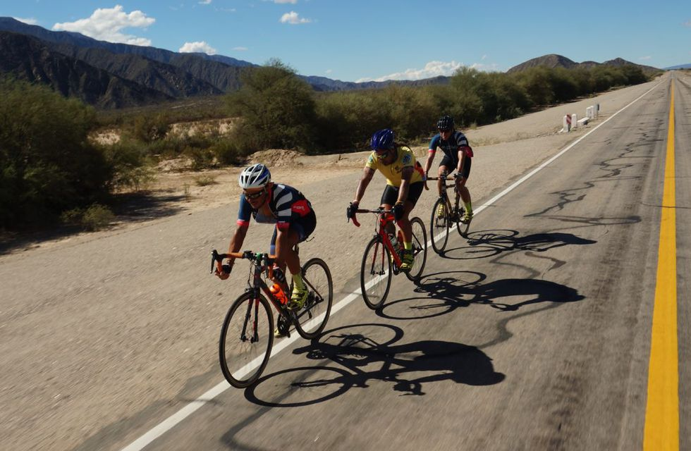

El desafío en bici de tres cordobeses por la mítica Ruta 40
Un grupo de ciclistas cordobeses recorre en 30 días la Argentina, de punta a punta. Una serie documental refleja el inédito desafío, las historias personales y los límites de cada deportista
Un grupo de ciclistas cordobeses recorre en 30 días la Argentina, de punta a punta. Una serie documental refleja el inédito desafío, las historias personales y los límites de cada deportista Finalmente, “Los Experimentados” quedó conformado por tres ciclo-viajeros (Francisco Luna, Leandro Busqueda y Gabriel Mardones) junto a un equipo de 5 personas, entre camarógrafos y asistentes, que recorren la mítica Ruta 40, desde La Quiaca (Jujuy) hasta Cabo Vírgenes (Santa Cruz). Se trata de la ruta más larga de Argentina y una de las más largas del mundo. Son 176 kilómetros por día, en tan sólo 30 días atravesando 11 provincias, ciudades, valles, desiertos, altura, en condiciones climáticas impredecibles. Se trata de un desafío atlético inédito y de un sueño, que descubre la impactante geografía argentina. La amistad, los límites físicos y mentales, las historias personales y el tremendo esfuerzo quedaron reflejados en una serie documental que comienza este martes 9 de agosto a las 23, producida por el canal público de deportes DEPORTV y la realización de El Camboyano Producciones. Son cuatro capítulos de 26 minutos de duración.